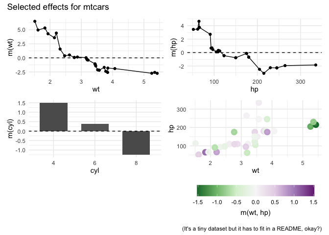

randomPlantedForest implements “Random Planted Forest”, a directly interpretable tree ensemble (arxiv).
Installation
You can install the development version of randomPlantedForest from GitHub with
# install.packages("remotes")
remotes::install_github("PlantedML/randomPlantedForest")or from r-universe with
install.packages("randomPlantedForest", repos = "https://plantedml.r-universe.dev")Example
Model fitting uses a familiar interface:
library(randomPlantedForest)
mtcars$cyl <- factor(mtcars$cyl)
rpfit <- rpf(mpg ~ cyl + wt + hp, data = mtcars, ntrees = 25, max_interaction = 2)
rpfit
#> -- Regression Random Planted Forest --
#>
#> Formula: mpg ~ cyl + wt + hp
#> Fit using 3 predictors and 2-degree interactions.
#> Forest is _not_ purified!
#>
#> Called with parameters:
#>
#> loss: L2
#> ntrees: 25
#> max_interaction: 2
#> splits: 30
#> split_try: 10
#> t_try: 0.4
#> delta: 0
#> epsilon: 0.1
#> deterministic: FALSE
#> nthreads: 1
#> purify: FALSE
#> cv: FALSE
predict(rpfit, new_data = mtcars) |>
cbind(mpg = mtcars$mpg) |>
head()
#> .pred mpg
#> 1 20.96451 21.0
#> 2 21.06539 21.0
#> 3 23.24140 22.8
#> 4 21.17155 21.4
#> 5 18.22740 18.7
#> 6 18.76736 18.1Prediction components can be accessed via predict_components, including the intercept, main effects, and interactions up to a specified degree. The returned object also contains the original data as x, which is required for visualization. The glex package can be used as well: glex(rpfit) yields the same result.
components <- predict_components(rpfit, new_data = mtcars)
str(components)
#> List of 3
#> $ m :Classes 'data.table' and 'data.frame': 32 obs. of 6 variables:
#> ..$ cyl : num [1:32] 0.224 0.224 0.873 0.224 -0.803 ...
#> ..$ wt : num [1:32] 0.177 -0.102 1.229 -0.154 -0.863 ...
#> ..$ hp : num [1:32] 1.253 1.253 1.559 1.253 -0.586 ...
#> ..$ cyl:wt: num [1:32] -0.0516 0.0326 -0.0978 0.0279 0.1207 ...
#> ..$ cyl:hp: num [1:32] -0.0549 -0.0549 0.1872 -0.0549 0.3816 ...
#> ..$ hp:wt : num [1:32] -0.5891 -0.2933 -0.5148 -0.1305 -0.0282 ...
#> ..- attr(*, ".internal.selfref")=<externalptr>
#> $ intercept: num 20
#> $ x :Classes 'data.table' and 'data.frame': 32 obs. of 3 variables:
#> ..$ cyl: Factor w/ 3 levels "4","6","8": 2 2 1 2 3 2 3 1 1 2 ...
#> ..$ wt : num [1:32] 2.62 2.88 2.32 3.21 3.44 ...
#> ..$ hp : num [1:32] 110 110 93 110 175 105 245 62 95 123 ...
#> ..- attr(*, ".internal.selfref")=<externalptr>
#> - attr(*, "class")= chr [1:3] "glex" "rpf_components" "list"Various visualization options are available via glex, e.g. for main and second-order interaction effects:
# install glex if not available:
if (!requireNamespace("glex")) remotes::install_github("PlantedML/glex")
#> Loading required namespace: glex
library(glex)
library(ggplot2)
library(patchwork) # For plot arrangement
p1 <- autoplot(components, "wt")
p2 <- autoplot(components, "hp")
p3 <- autoplot(components, "cyl")
p4 <- autoplot(components, c("wt", "hp"))
(p1 + p2) / (p3 + p4) +
plot_annotation(
title = "Selected effects for mtcars",
caption = "(It's a tiny dataset but it has to fit in a README, okay?)"
)
See the Bikesharing decomposition article for more examples.